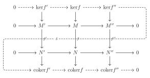
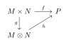
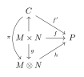
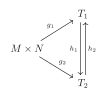
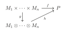
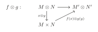
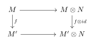
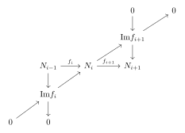

第 7 章：环与模
§ 01环和理想
定义 1.1
\((R,+,\cdot)\) 称为环(ring)，若满足：
- \((R,+)\) 是交换群(这样\(R\)有零元素，记为0)
- \((xy)z=x(yz)\)
- \(x(y+z)=xy+xz\)
- \((y+z)x=yz+zx\)
- \(xy=yx\)
- \(\exists1\in R\),\(\forall x\in R,x1=1x=x\)
定义 1.2
\(R\) 的子集称为子环(subring)，若它对 \(R\) 中的加法与乘法也构成环。
\(R\) 的子群 \(I\) 称为理想(ideal)，若满足 \(\forall a\in R,x\in I,ax\in R\)。
考虑 \(\left\{I_i\right\}_{i\in J}\) 是 \(R\) 的所有理想，则 \(\cap_{i\in J}I_i\) 也是 \(R\) 的理想。
定义 1.3
定义 \(\sum_{i\in J}I_i=\left\{ \sum_{i\in J'}a_i\Big| a_i\in I_i,J'\subset J\text{有限}\right\}\)。
\(I_1\cdot I_2=\left\{a_ib_j\Big| a_i\in I_1,b_j\in I_2\right\}\)。
\(R,I\) 为理想，\(R/I=\left\{\bar{a}=a+I\Big| a\in R\right\}\) 称为 \(R\) 模 \(I\) 的商环。
定义 1.4
对 \(x\in R\)：
- 称为零因子(zero divisor)若存在 \(y\neq 0 \in R\) 使 \(xy=0\)。
- 称为幂零的(nilotent)若存在 \(n\) 使得 \(x^n=0\)。
- 称为单位(unit)若存在 \(y\in R\) 使得 \(xy=1\)。
环称为整环(integral domain)，若没有非零零因子。
定义 1.5
由单位生成的理想称为单位理想(unit ideal)。
由一个元生成的理想称为主理想(principal ideal)。
一个理想称为环 \(R\) 的极大理想，若它不被包含于任一其他 \(R\) 的理想。
一个理想 \(p\) 称为素理想，若 \(xy\in \mathfrak{p}\) 能推出 \(x\in \mathfrak{p}\) 或 \(y\in \mathfrak{p}\)。
命题 1.6
\(I\) 是素理想 \(\Longleftrightarrow\) \(R/I\) 是整环。
例 1.7
\(k[x]\) 的理想均形如 \((f(x))\)。
定理 1.8
任一非零理想、非单位理想、非单位元都包含于某一极大理想。
定义 1.9
所有幂零元构成的理想称作幂零根(nilradical)。
所有极大理想的交称作Jacobson 根(Jacobson radical)。
定理 1.10
幂零根等于所有素理想的交。
\(\mathrm{Jacb}(R)\) 是所有满足 \(\forall r\in R,1-ar\) 可逆的 \(a\) 构成的集合。
定义 1.11
\((I:J)=\left\{x\in R\Big| xJ\subset I\right\}\) 称为商理想。\((0:J)\) 称作 \(J\) 的零化理想(annihilator)，记作 \(\mathrm{Ann}(J)\)。特别的，若 \(J=(x)\)，简记 \((I:J)=(I:x)\)。
\(r(I)=\left\{x\in R\Big| x^n\in I,n>0\right\}\) 称作 \(I\) 的根(radical)。
例 1.12
\(\displaystyle\bigcup_{0\neq x\in R} \mathrm{Ann}(x)=\left\{R \text{的零因子}\right\}\)。\(r(I)=\displaystyle\bigcap_{I\subset \mathfrak{p}\ prime}\mathfrak{p}\)。
§ 02模
定义 2.1
设\(R\)是一个交换环，\(M\)是一个交换群，\(\mu:R\times M\rightarrow M\)，我们把\(\mu(r,x)\)写作\(rx\)，若：
- \(a(x+y)=ax+by\)，
- \((a+b)x=ax+bx\)，
- \((ab)x=a(bx)\)，
- \(1x=x\)。
则称 \(M\) 为R-模(R-module)。
\(M\) 的子群称作子模(submodule)若 \(M\) 也是 \(R\)-模。
定义 2.2
两个 \(R\)-模 \(M,N\) 之间的映射 \(f:M\rightarrow N\) 称为同态(homomorphism)，若满足 \(f(x+y)=f(x)+f(y),f(ax)=af(x),\forall a\in R\)。
称 \(f\) 是同构(isomorphism)若存在同态 \(g:N\rightarrow M\) 满足 \(f\circ g=id_N,g\circ f=id_M\)。
\(\mathrm{ker}f=f^{-1}(0)\) 是 \(M\) 的子模。
\(\mathrm{coker}f=N/\mathrm{Im}f\) 是 \(R\)-模。
\(\mathrm{Hom}_R(M,N)\) 为所有同态 \(f:M\rightarrow N\) 构成的集合，也是一个 \(R\)-模
定义 2.3
\(\left\{M_i\right\}_{i\in S}\) 是 \(M\) 的一列子模，定义
称 \(M\) 是 \(\left\{M_i\right\}_{i\in S}\) 的直和若每个元素表示方法唯一，记作 \(M=\displaystyle\bigoplus_{i\in S}M_i\)。
定义 2.4
\(M\) 是自由的若 \(M=\displaystyle\bigoplus_{i\in S}M_i\) 且 \(M_i\cong R\)
称 \(M\) 是有限生成的若 \(M=\displaystyle\sum_{1\le i\le n} R\cdot x_i,x_i\in M\)。
定义 2.5
若 \(M\) 是有限生成自由模，则 \(M\cong R^{\oplus n}\) 且 \(n\) 唯一，\(n\) 称为这个自由模的维数(rank)。
命题 2.6
\(M\) 有限生成 \(\Longleftrightarrow\) 存在 \(R^{\oplus n}\twoheadrightarrow M\) \(\Longleftrightarrow\) \(M\) 是 \(R^{\oplus n}\) 的商模。
定义 2.7
\(M\) 是 \(R\)-模，\(I\) 是 \(R\) 的理想，定义 \(IM=\left\{\sum_{i=1}^{n}a_ix_i\Big| a_i\in I,x_i\in M\right\}\)。
\(N,N'\) 是 \(M\) 的子模，定义 \((N':N)=\left\{x\in R\Big| x\cdot N\subset N'\right\}\) 是 \(R\) 的一个理想，\((0:N)\) 记作 \(\mathrm{Ann}(N)\)。
定义 2.8
称 \(M\) 是忠实的(faithful) 若 \(\mathrm{Ann}(M)=0\)。
\(M\) 在 \(R/\mathrm{Ann}(M)\) 是忠实的。
命题 2.9Cayley-Hamilton
\(M\) 是有限生成 \(R\)-模，\(\phi\in \mathrm{Hom}_R(M,M)\)，\(\phi(M)\subset I\cdot M\)，则存在 \(a_i\in I\) 使得
证明
设 \(M\) 生成元 \(x_1,\cdots,x_n\)，\(M=\sum R\cdot x_i\)，则 \(\phi(x_i)=\sum_j a_{i,j}x_j,a_{i,j}\in I\)，则
进而 \((a_{i,j}-\delta_{i,j}\phi)_{n\times n}\left( \begin{array}{c} x_1\\ \vdots\\ x_n\\ \end{array} \right) =0\)，故 \(\mathrm{det}A(x_i)=0\)。
若 \(IM=M\)，取 \(\phi=id_M\)，则存在 \(a\in I,(1+a)M=0\)。
引理 2.10Nakayama
\(M\) 是有限生成模，理想 \(I\subset \mathrm{Jacb}(R)\)。若 \(IM=M\) 则 \(M=0\)。更一般的，对 \(M\) 的子模 \(N\)，若 \(M=N+IM\) 则 \(M=N\)。
证明
存在 \(a\in I\)，\((1+a)M=0\)，由于 \(1+a\) 是单位，故 \(M=0\)。
对第二个结论，我们有 \(I(M/N)=(IM+N)/N=M/N\)。
推论 2.11
环 \(R\)，有限生成 \(R\)-模 \(M\)，\(x_1,\cdots,x_n\in M\) 满足 \(R/\mathfrak{m}\curvearrowright M/\mathfrak{m}M=\sum R\cdot \bar{x_i}\)，则 \(M=\sum Rx_i\)。
证明
\(N=\sum_i Rx_i\)，则 \(M=N+\mathfrak{m}M\)，由 Nakayama 引理知成立。
定义 2.12
环 \(R\) 称为局部的(local)若它仅有一个极大理想 \(\mathfrak{m}\)，进而 \(R\setminus \mathfrak{m}\) 中均是单位元，\(R/\mathfrak{m}\) 称为 \(R\) 的剩余类域(residue field)。
推论 2.13
\(R\)是局部环，\(M\) 是有限生成 \(R-\)模，则我们可以将 \(M/\mathfrak{m}M\) 看成 \(R/\mathfrak{m}-\)模，这是一个向量空间。若这个向量空间的基是 \(x_1,\cdots,x_n\)，则 \(\left\{x_i\right\}\) 生成 \(M\)。
证明
设 \(N\) 是由 \(\left\{x_i\right\}\) 生成的子模，则 \(N\rightarrow M/\mathfrak{m}M\) 是满射，这表示 \(N+\mathfrak{m}M=M\)，由 Nakayama 引理知 \(N=M\)。
推论 2.14
\(R\) 是局部环，\(M=0\) 当且仅当 \(M/\mathfrak{m}M=0\)。\(M\rightarrow N\) 是满射当且仅当 \(M/\mathfrak{m}M\rightarrow N/\mathfrak{m}N\) 是满射。
2.1 正合性
定义 2.15
一个 \(R\)-模和 \(R\)-同态的序列
叫做在 \(M_i\) 处正合(exact)，若 \(\mathrm{Im}(f_i)=\mathrm{Ker}(f_{i+1})\)。
- \(0 \rightarrow M' \rightarrow M\rightarrow M'' \rightarrow 0\) 称作短正合列；
- \(0 \rightarrow M' \rightarrow M\rightarrow M''\) 称作左正合列；
- \(M' \rightarrow M\rightarrow M'' \rightarrow 0\) 称作右正合列。
例 2.16
-
\(0\rightarrow M'\stackrel{f}{\longrightarrow} M\) 是正合的当且仅当 \(f\) 是单射；
-
\(M\stackrel{g}{\longrightarrow} M''\rightarrow 0\) 是正合的当且仅当 \(f\) 是满射；
-
\(\dots \rightarrow M_{i-1} \stackrel{f_i}{\longrightarrow}M_i\stackrel{f_{i+1}}{\longrightarrow}M_{i+1} \rightarrow\cdots\)
是正合的当且仅当 \(0 \rightarrow \mathrm{Im}f_i \rightarrow M_i\rightarrow \mathrm{Ker}f_{i+1} \rightarrow 0\) 是正合的。
定义 2.17
正合列 \(0 \rightarrow M' \stackrel{f}{\rightarrow}M\stackrel{g}{\rightarrow}M'' \rightarrow 0\) 称为分裂的(split)，若存在 \(h:M''\rightarrow M\) 使得 \(g\circ h=id_M\)。
注意到 \(f,h\) 都是单射，故 \(M',M''\) 可视作 \(M\) 的子模且由 \(g\circ f=0\) 有 \(M'\cap M''=\left\{0\right\}\)。对任意 \(x\in M\)，\(x=h(g(x))+(x-h(g(x))\in M''+M'\)，故 \(M=M'\oplus M''\)。
命题 2.18
\((1)\) \(M'\rightarrow M\rightarrow M''\rightarrow 0\) 是正合的当且仅当对任意 \(R-\)模 \(N\)，有
是正合的。
\((2)\) \(0\rightarrow N'\rightarrow N\rightarrow N''\) 是正合的当且仅当对任意 \(R-\)模 \(N\) 有
是正合的。
证明
我们只证明 \((1)\)，\((2)\) 是类似的。
设 \(M'\rightarrow M\rightarrow M''\rightarrow 0\) 是正合的。若 \(M\rightarrow M''\rightarrow N\) 是零的，由于 \(M\rightarrow M'\) 是满射，故 \(M''\rightarrow N\) 是零。于是 \(\mathrm{Hom}(M'',N)\rightarrow \mathrm{Hom}(M,N)\) 是单射。
若 \(f:M\rightarrow N\in \mathrm{Im}(\mathrm{Hom}(M'',N)\rightarrow \mathrm{Hom}(M,N))\)，则 \((M'\rightarrow M\rightarrow N)=(M'\rightarrow M\rightarrow M''\rightarrow N)=0\)，故 \(f\in \mathrm{Ker}(\mathrm{Hom}(M,N)\rightarrow \mathrm{Hom}(M',N))\)。
另一方面若 \((M'\rightarrow M\rightarrow N)=0\)，由于 \(M''\cong M/\mathrm{Im}(M'\rightarrow M)\)，故存在自然映射 \(M''\rightarrow N,(M\rightarrow N)=(M\rightarrow M''\rightarrow N)\)，故 \(M\rightarrow N\in \mathrm{Im}(\mathrm{Hom}(M'',N)\rightarrow \mathrm{Hom}(M,N))\)。
反过来是类似的，读者自证不难。
命题 2.19Snake lemma

是交换图。则存在正合列
其中 \(\delta\) 称为边缘同态(boundary homomorphism)。
证明
我们这样给出 \(\delta\)：对任意 \(x''\in M\)，\(f''(x'')=0\)，我们取 \(x\in M\)，\((M\rightarrow M'')(x)=x''\)，则 \(f(x)\in \mathrm{ker}(N\rightarrow N'')\)，故存在唯一的 \(x'\in N',x'\rightarrow f(x)\)。令 \(\delta(x'')=\overline{x'}\in \mathrm{coker}f'\)，容易验证良定义，且 \(\mathrm{ker}f\rightarrow \mathrm{ker}f''\stackrel{\delta}{\rightarrow}\mathrm{coker}f'\rightarrow \mathrm{coker}f\) 正合
定义 2.20
设 \(S\) 是一些 \(R-\)模构成的集合，\(\lambda:S\rightarrow \mathbb{Z}\) 称为可加的(additive)若对任意正合列 \(0\rightarrow M'\rightarrow M\rightarrow M''\rightarrow 0\) 有 \(\lambda(M)=\lambda(M')+\lambda(M'')\)。
例 2.21
若 \(R\) 是域，则 \(\lambda(M)=\mathrm{dim}_R(M)\) 是可加的。
引理 2.22
设 \(0\rightarrow M_0\rightarrow M_1\rightarrow \cdots \rightarrow M_n\rightarrow 0\) 是正合的，\(M_i\in S\)，\(\lambda\) 在 \(S\) 上可加，则
证明
\(0\rightarrow \mathrm{Im}f_i\rightarrow M_i\rightarrow \mathrm{Im}f_{i+1}\rightarrow 0\) 是正合的，故 \(\lambda(M_i)=\lambda(\mathrm{Im}f_i)+\lambda(\mathrm{Im}f_{i+1})\)。
2.2 张量积
定义 2.23
\(M,N,P\) 是 \(R-\)模，\(f:M\times N\rightarrow P\) 称为 \(R-\)双线性的(\(R-\)bilinear)，若任意 \(x\in M\)，\(N\rightarrow P,y\mapsto f(x,y)\) 是 \(R-\)线性的且任意 \(y\in N\)，\(M\rightarrow P,x\mapsto f(x,y)\) 是 \(R-\)线性的。
若 \(f\) 是 \(R-\)双线性的，则如下元素均为零：
定义 2.24
\(M,N\) 是 \(R-\)模，\(C=\bigoplus_{(x,y)\in M\times N} R\cdot (x,y)\)，\(D\subset C\) 由 \((\ast)\) 生成。称 \(C/D\) 为 \(M\) 与 \(N\) 的张量积，记作 \(M\otimes N\)。
命题 2.25Universal property
存在双线性映射 \(g:M\times N\rightarrow M\otimes N,(x,y)\mapsto x\otimes y\) 使得对任意双线性映射 \(f:M\times N\rightarrow P\)，存在唯一的 \(R\)-线性映射 \(h\) 使下图交换：

证明
对任意映射 \(f:M\times N\rightarrow P\)，我们有 \(f':C\rightarrow P,\sum a_{xy}(x,y)\mapsto \sum a_{xy}f(x,y)\)，则 \(f\) 是双线性的当且仅当 \(\mathrm{ker}f'\supset D\)。故若 \(f\) 是双线性的，则存在唯一的 \(h\)，\(f'=h\circ \pi\)，其中 \(\pi\) 是投影映射 \(C\rightarrow M\otimes N=C/D\)，则 \(f=h\circ g\)。

由此命题我们可以有如下张量积的定义：
定义 2.26
\(M,N\) 的张量积 \(T\) 是由双线性映射 \(g:M\times N\rightarrow T\) 定义的模，对任意 \(f:M\times N\rightarrow P\) 存在唯一的线性映射 \(f':T\rightarrow P,f=f'\circ g\)。
张量积的唯一性
若我们有两个不同的张量积 \(T_1\) 和 \(T_2\) 与对应的双线性映射 \(g_1,g_2\)，由上定义存在 \(h_1:T_1\rightarrow T_2,g_2=h_1\circ g_1\) 与 \(h_2:T_2\rightarrow T_1,g_1=h_2\circ g_2\)。则 \(g_2=h_1\circ g_1=h_1\circ h_2\circ g_2\)。由于 \(h_1\circ h_2:T_2\rightarrow T_2\) 是线性的，由唯一性 \(h_1\circ h_2=id_{T_2}\)。同理 \(h_2\circ h_1=id_{T_1}\)，故 \(T_1\cong T_2\)。

由 Universal property，我们可以定义 \(M_1,\cdots,M_n\) 的张量积，由多线性映射 \(g:M_1\times \cdots \times M_n\rightarrow M_1\otimes \cdots \otimes M_n,(x_1,\cdots,x_n)\mapsto x_1\otimes \cdots \otimes x_n\) 定义，对任意多线性映射 \(f:M_1\times \cdots \times M_n\rightarrow P\)，存在唯一的 \(R\)-线性映射 \(h\) 使下图交换：

设 \(M\) 由 \(\left\{x_i\right\}_{i\in S}\) 生成，\(N\) 由 \(\left\{y_i\right\}_{i\in S'}\) 生成，则
即 \(M\otimes\) 由 \(\left\{x_i\otimes y_j\right\}\) 生成。于是有如下推论：
推论 2.27
若 \(M,N\) 有限生成，则 \(M\otimes N\) 也有限生成。
例 2.28
将 \(\mathbb{Z}_m\otimes \mathbb{Z}_n\) 看成 \(\mathbb{Z}-\)模。我们来证 \(\mathbb{Z}_m\otimes \mathbb{Z}_n\cong \mathbb{Z}_{(m,n)}\)。
令 \(d=(m,n)\)，\(\mathbb{Z}_m\otimes \mathbb{Z}_n\) 由 \(1\otimes 1\) 生成，\(m(1\otimes 1)=m\otimes 1=0,n(1\otimes 1)=1\otimes n=0\)，故 \(d(1\otimes 1)=0\)。令 \(f:\mathbb{Z}_m\times \mathbb{Z}_n\rightarrow \mathbb{Z}_d,(a,b)\mapsto ab\)，这是双线性的，故由 Universal property 存在满射 \(h:\mathbb{Z}_m\otimes \mathbb{Z}_n\rightarrow \mathbb{Z}_d\)。这同时也是单射因为 \(d(1\otimes 1)=0\)。
例 2.29
设 \(M,N\) 分别为 \(m,n\) 维自由模且
令 \(A=\bigoplus_{i=1}^n\bigoplus_{j=1}^m R x_i\otimes y_j\)。
考虑 \(f:M\times N\rightarrow A,(\sum a_ix_i,\sum b_jy_j)\mapsto \sum a_ib_j(x_i\otimes y_j)\)，这是双线性的，故我们可以构造 \(f':M\otimes N\rightarrow A,f'=f\circ g\)。
另一方面我们自然有 \(h:A\rightarrow M\otimes N,x_i\otimes y_j\mapsto x_i\otimes y_j\)。可以验证 \(f'\circ h=id_A,h\circ f'=id_{M\otimes N}\)，故 \(M\otimes N\cong A\) 是一个 \(mn\) 维的自由模。
例 2.30
\(2\otimes \overline{1}\in \mathbb{Z}\otimes \mathbb{Z}_2\)，\(2\otimes \overline{1}=2\cdots 1\otimes \overline{1}=1\otimes 2\cdots \overline{1}=\overline{0}\)，但在 \(2\mathbb{Z}\otimes \mathbb{Z}_2\) 中 \(2\otimes \overline{1}\neq 0\)。
故若 \(M'\subset M,N'\subset N\)，不一定有 \(M'\otimes N'\subset M\otimes N\)。
另一方面，若 \(\sum x\otimes y=0\in M'\otimes N'\)，则 \(\sum x\otimes y=0\in M\otimes N\)。
命题 2.31
\(M,N,P\) 是 \(R-\)模，则有如下命题成立：
- \(M\otimes N\cong N\otimes M\)
- \((M\otimes N)\otimes P\cong M\otimes (N\otimes P)\cong M\otimes N\otimes P\)
- \((M\oplus N)\otimes P\cong (M\otimes P)\oplus (N\otimes P)\)
证明
这些同构分别由如下映射给出：
- \(x\otimes y\mapsto y\otimes x\)；
- \((x\otimes y)\otimes z\mapsto x\otimes (y\otimes z)\mapsto x\otimes y\otimes z\)；
- \((x,y)\otimes z\mapsto (x\otimes z,y\otimes z)\)。
设 \(M\) 是 \(R-\)模，\(N\) 是 \(R,R'-\)双模(满足 \((ax)b=a(xb)\))，\(P\) 是 \(R'-\)模，则
是 \(R,R'-\)双模
命题 2.32
同态 \(f:M\rightarrow M',g:N\rightarrow N'\) 则

设 \(N\) 是 \(R-\)模，在范畴论中我们有函子
Cat of R-module\(\longrightarrow\) Cat of R-module

设 \(\varphi:R\rightarrow R'\) 是环同态，则在 \(R'\) 上定义 \(ra=\varphi(r)a\) 则是一个 \(R-\)模。对任意 \(R'-\)模 \(M'\)，定义 \(ra=\varphi(r)a\) 则是一个 \(R-\)模，这称为纯量限制(restriction of scalars)。对任意 \(R-\)模 \(M\)，在 \(M\otimes_RR'\) 上定义 \(r(a\otimes x)=a\otimes rx\) 则是一个 \(R'-\)模，这称为纯量扩张(extension of scalars)。
命题 2.33
- 若 \(M'\) 在 \(R'\) 上有限生成，\(R'\) 在 \(R\) 上有限生成，则 \(M'\) 在 \(R\) 上有限生成；
- 若 \(M\) 在 \(R\) 上有限生成，则 \(M\otimes_R R'\) 在 \(R'\) 上有限生成。
2.3 张量积的正合性
命题 2.34
\(M'\rightarrow M\rightarrow M''\rightarrow0\) 正合，对任一 \(R-\)模 \(N\) 都有
正合。
推论 2.35
由于 \(I\rightarrow R\rightarrow R/I \rightarrow 0\) 正合，故任意 \(R-\)模 \(M\)，\(I\otimes M\rightarrow R\otimes M\rightarrow R/I\otimes M\rightarrow 0\) 正合。
注意到 \(R\otimes M\cong M\)，\(I\otimes M\cong IM\)，故\((R/I)\otimes M\cong M/IM\)。
特别的令 \(M=R/J\)，则 \(R/I\otimes R/J\cong R/I+J\)。
引理 2.36
\(M,N,P\) 是 \(R-\)模，则 \(\mathrm{Hom}_R(M\otimes N,P)\cong \mathrm{Hom}_R(M,\mathrm{Hom}_R(N,P))\)
证明
下述两个映射互为逆映射：
命题2.10的证明
由命题2.4我们希望
对任意 \(P\) 都正合，而由上述引理这等价于
正合，再次利用命题2.4我们完成了证明。
定义 2.37
一个 \(R-\)模 \(M\) 是平坦的(flat)，若对任意正合列
有
也是正合的。
例 2.38
自由模是平坦的，任意有限生成平坦 \(\mathbb{Z}-\)模都是自由的。
命题 2.39
下述命题等价：
- \(M\) 是平坦的；
- 任意正合列 \(0\rightarrow N'\rightarrow N\rightarrow N''\rightarrow 0\)，\(0\rightarrow N'\otimes M\rightarrow N\otimes M\rightarrow N''\otimes M\rightarrow 0\) 正合。
- 任意正合列 \(0\rightarrow N'\rightarrow N\)，\(0\rightarrow N'\otimes M\rightarrow N\otimes M\) 正合。
- 任意有限生成模 \(N,N'\)，若 \(0\rightarrow N'\rightarrow N\) 正合，则 \(0\rightarrow N'\otimes M\rightarrow N\otimes M\) 正合。
证明
\((1)\Longrightarrow (2)\) 是显然的。
\((2)\Longrightarrow (1)\)：回忆若有正合列 \(N_{i-1}\stackrel{f_i}{\longrightarrow}N_i\stackrel{f_{i+1}}{\longrightarrow} N_{i+1}\)，则
也是正合的，进而 \(0\rightarrow \mathrm{Im}f_i\otimes M\rightarrow N_i\otimes M\rightarrow \mathrm{Im}f_{i+1}\otimes M\rightarrow 0\) 正合。我们有自然映射 \(\mathrm{Im}f_{i+1}\rightarrow N_i\) 与 \(N_i\rightarrow \mathrm{Im}f_i\)，故s

\((2)\Longleftrightarrow (3)\) 由命题2.10是显然的。
\((3)\Longrightarrow (4)\) 是显然的。
\((4)\Longrightarrow (3)\)：设 \(M'\rightarrow M\) 是单射，我们来证明 \(f\otimes 1:M'\otimes N\rightarrow M\otimes N\) 也是单射。取 \(x\in \mathrm{ker}(f\otimes 1)\)，\(x=\sum_{i=1}^n x_i\otimes y_i\)，则 \((f\otimes 1)(x)=\sum_{i=1}^n f(x_i)\otimes y_i=0\)。取 \(\tilde{M}'\) 由 \(x_1,\cdots,x_n\) 生成，\(\tilde{M}\) 由 \(f(x_1),\cdots,f(x_n)\) 生成，则我们有单射 \(f\Big|_{\tilde{M}'}:\tilde{M}'\rightarrow \tilde{M}\)，且 \((\tilde{f}\otimes 1)(x)=0\)，即 \(x=0\in \tilde{M}'\otimes N\)，即 \(x=0\in M'\otimes N\)，于是我们完成了证明。
命题 2.40
若 \(M\) 是 \(R\) 上的平坦模，则 \(M\otimes_R R'\) 是 \(R'\) 上的平坦模。
证明
由 \(N_i\otimes_{R'} (R'\otimes_R M)\cong N_i\otimes_R M\) 即得。
定义 2.41
环 \(R'\) 由同态 \(f:R\rightarrow R'\) 给出的 \(R-\)模结构称为一个 \(R\) 上的代数。
完
评论